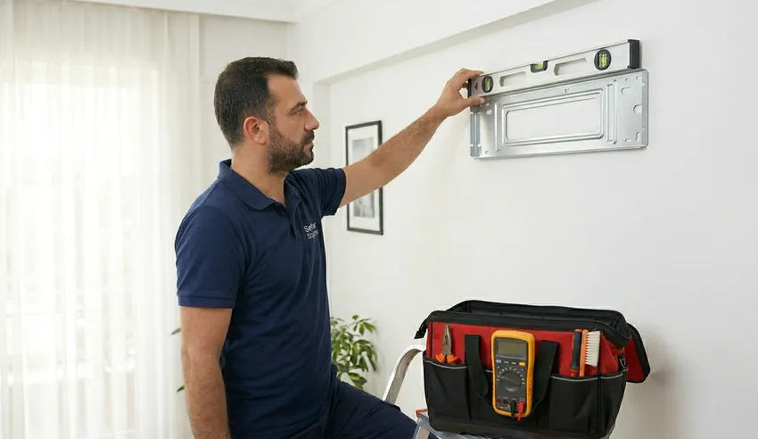

📐 Doğru Yer, Doğru Montaj: Sertler Soğutma Tarsus Klima Montaj Hizmeti ile Verimliliği Garantileyin!
Akdeniz’in kavurucu sıcağının en yoğun hissedildiği bölgelerden biri olan Tarsus’ta, bir klima sadece lüks bir eşya değil, yaşam kalitesini belirleyen hayati bir ihtiyaçtır. Ancak, en kaliteli klimayı satın almış olmanız bile, tek başına mükemmel bir serinlik vaat etmez. Klimanın performansı, ömrü ve enerji tüketimi, kurulum aşamasındaki titizliğe doğrudan bağlıdır. İşte bu noktada Sertler Soğutma, profesyonel Tarsus Klima Montaj hizmetiyle devreye girerek, cihazınızın mühendislik kapasitesini tam anlamıyla ortaya çıkarmanızı sağlar. Yanlış yapılan bir montaj, sadece verim kaybına değil, aynı zamanda yüksek elektrik faturalarına ve kısa sürede ortaya çıkan teknik arızalara davetiye çıkarır.
Tarsus’un nemli ve sıcak havası, iklimlendirme sistemleri üzerinde büyük bir yük oluşturur. Bu yükün dengeli bir şekilde taşınabilmesi için montajın yapılacağı duvarın yapısından, dış ünitenin hava sirkülasyonu alabileceği konuma kadar her detay milimetrik hesaplanmalıdır. Sertler Soğutma olarak biz, yıllardır Tarsus halkına sunduğumuz Tarsus Klima Montaj çözümlerinde, sadece bir cihaz takmıyor, yaşam alanlarınız için ideal bir iklimlendirme mimarisi inşa ediyoruz. Doğru yer seçimi ve profesyonel işçilikle, "doğru montaj" felsefemizi her eve ve her ofise taşıyoruz.

Tarsus Klima Montaj Süreçleri ve Detayları
Bir klimanın kutusundan çıkarılıp duvara asılması, işin sadece görünen ve en basit kısmıdır. Gerçek bir Tarsus Klima Montaj süreci, teknik bir protokoller dizisidir. Sertler Soğutma ekipleri, adrese ulaştıkları andan itibaren belirli bir sistematik dahilinde hareket ederler. İlk aşama, iç ve dış ünitenin konumlandırılacağı yerlerin belirlenmesidir. İç ünite, havayı odaya homojen bir şekilde dağıtabilecek, doğrudan kullanıcıların üzerine üflemeyecek ve servis müdahalesine imkan tanıyacak bir yüksekliğe monte edilmelidir. Tarsus’un mimari yapısına uygun olarak, estetik ve fonksiyonelliği bir arada sunan çözümler geliştiriyoruz.
Konum belirlendikten sonra, montajın en kritik aşamalarından biri olan tesisat hazırlığına geçilir. Bakır boruların kesilmesi, havşalanması ve izolasyon malzemeleriyle kaplanması, sızdırmazlık için hayati önem taşır. Sertler Soğutma, Tarsus Klima Montaj işlemlerinde her zaman birinci sınıf bakır boru ve yüksek yoğunluklu izolasyon malzemeleri kullanır. Dış ünite ise, güneş ışığını doğrudan almayan, hava akışının engellenmediği ve titreşimin binaya yayılmayacağı sağlam bir zemine veya konsola sabitlenir. Bu süreçte kullanılan dübel ve vida kalitesi bile, klimanın yıllarca yerinde sarsılmadan kalmasını sağlayan gizli kahramanlardır.
Tesisat bağlantıları tamamlandıktan sonra, çoğu amatör servisin ihmal ettiği ancak en önemli adım olan vakumlama işlemine geçilir. Sistemin içindeki havanın ve nemin tamamen tahliye edilmesi, klimanın kompresör ömrünü %50’ye kadar artırır. Sertler Soğutma olarak biz, Tarsus Klima Montaj hizmetimizde vakumlama yapmadan asla gaz vermiyoruz. Vakumlama bittikten sonra gaz vanaları açılır ve sistemdeki basınç değerleri manifoltlarla ölçülür. Son aşamada ise iç ünitenin su tahliyesi (drenaj) testi yapılır; suyun herhangi bir sızıntı yapmadan dışarı aktığı teyit edilir ve cihaz kullanıcıya tüm fonksiyonları anlatılarak teslim edilir.
Sertler Soğutma ile Güvenli Klima Kurulumu
Güvenlik, iklimlendirme sektöründe asla taviz verilmemesi gereken bir konudur. Klimanız yüksek voltajla çalışan ve içinde yüksek basınçlı gaz barındıran bir cihazdır. Sertler Soğutma, sunduğu Tarsus Klima Montaj hizmetlerinde güvenliği üç temel sacayağı üzerine kurar: Elektriksel güvenlik, fiziksel dayanıklılık ve gaz sızdırmazlığı. Tarsus gibi eski yapıların ve yeni projelerin harmanlandığı bir şehirde, elektrik tesisatının klimayı kaldırıp kaldırmayacağı mutlaka kontrol edilmelidir. Uzman ekiplerimiz, klimanın besleme hattını ve sigorta amperini kontrol ederek, olası yangın ve kısa devre risklerini önceden bertaraf eder.
Fiziksel dayanıklılık noktasında ise dış ünitenin montajı büyük önem arz eder. Tarsus’un rüzgarlı günlerinde veya olası bir sarsıntıda dış ünitenin düşmemesi için kullanılan askı aparatlarının (konsolların) kalitesi ve montaj yapılan duvarın taşıma kapasitesi titizlikle incelenir. Sertler Soğutma, Tarsus Klima Montaj sırasında standartlara uygun çelik dübeller kullanarak maksimum güvenlik sağlar. İç ünitede ise sacın duvara tam oturması, cihazın zamanla öne doğru eğilmesini veya ses yapmasını engeller. Bizim için güvenli kurulum, sadece cihazın çalışması değil, kullanıcının evinde huzurla uyuyabilmesidir.
Gaz sızdırmazlığı ise hem çevre sağlığı hem de cihazın performansı için kritiktir. Yanlış yapılan havşa bağlantıları, zamanla gazın atmosfere kaçmasına neden olur. Bu durum hem ozon tabakasına zarar verir hem de klimanızın soğutma yeteneğini kaybetmesine yol açar. Sertler Soğutma teknisyenleri, Tarsus Klima Montaj işlemlerinde özel tork anahtarları ve sızdırmazlık solüsyonları kullanarak tüm bağlantı noktalarını garanti altına alır. Güvenli bir kurulum, aynı zamanda cihazın garanti kapsamının korunması demektir; profesyonel olmayan müdahaleler, üretici garantisini geçersiz kılabilir.
Tarsus’ta Profesyonel Montaj Hizmeti
Tarsus gibi geniş bir yüzölçümüne ve yoğun nüfusa sahip bir kentte, servis seçenekleri oldukça fazladır. Ancak "servis" ile "profesyonel hizmet" arasında derin bir uçurum vardır. Sertler Soğutma, bu uçurumu teknik uzmanlığı ve müşteri odaklı yaklaşımıyla kapatır. Profesyonel bir Tarsus Klima Montaj hizmeti, sadece teknik beceri değil, aynı zamanda müşteriye sunulan nezaket ve temiz çalışma prensibini de içerir. Ekiplerimiz, evinize girdiğinde galoş kullanımından, duvar delme işlemi sırasında oluşan tozun vakumla çekilmesine kadar her ayrıntıya dikkat eder. Bizim amacımız, kurulum bittiğinde arkamızda sadece serin bir oda ve mutlu bir yüz bırakmaktır.
Profesyonelliğimizin bir diğer kanıtı ise teknolojik donanımımızdır. Klima teknolojileri her geçen gün gelişiyor; inverter modeller, akıllı sensörlü sistemler ve yeni nesil çevreci gazlar (R32 gibi) farklı montaj teknikleri gerektiriyor. Sertler Soğutma personeli, düzenli olarak markaların teknik eğitimlerine katılarak Tarsus Klima Montaj konusundaki bilgilerini güncel tutar. Hangi marka veya model klimaya sahip olursanız olun, cihazın teknolojisine en uygun montaj protokolünü uyguluyoruz. Tarsus'un yerel bir firması olmamızın verdiği avantajla, bölgenin mimari zorluklarını biliyor ve ona göre ekipman sağlıyoruz.
Ayrıca, profesyonel hizmetin bir parçası olarak kurulum sonrası bilgilendirmeye büyük önem veriyoruz. Montaj bittikten sonra klimanın verimli kullanımı, filtre temizliği ve kumanda fonksiyonları hakkında kullanıcıya detaylı eğitim verilir. Sertler Soğutma, sunduğu Tarsus Klima Montaj hizmetinin her zaman arkasındadır. Yapılan işçilik hatalarına karşı (ki bu oran bizde yok denecek kadar azdır) hızlı müdahale garantisi sunuyoruz. Tarsus’ta profesyonellik dendiğinde akla gelen ilk isim olmamızı, işimize duyduğumuz bu tutkuya borçluyuz.
Sertler Soğutma ile Enerji Verimli Montaj
Günümüzde enerji maliyetleri her geçen gün artıyor. Bir klimanın faturanıza olan etkisini belirleyen en önemli faktör, montajın ne kadar "akıllıca" yapıldığıdır. Sertler Soğutma, enerji verimliliğini odağına alan bir Tarsus Klima Montaj yaklaşımı sergiler. Enerji verimliliği, klimanın doğru yere, doğru açıyla ve doğru tesisat uzunluğuyla kurulmasıyla başlar. Örneğin, doğrudan güneş ışığı alan bir dış ünite, içeriyi soğutmak için daha fazla enerji harcayacaktır. Biz, dış üniteyi mümkün olan en gölge ve hava akımı olan yere konumlandırarak, kompresörün daha az yorulmasını sağlıyoruz.
İç ünite montajında ise hava sirkülasyonunun önündeki engeller kaldırılmalıdır. Perdelerin, mobilyaların veya kirişlerin klimanın hava üflemesini engellemesi, cihazın oda sıcaklığını algılamasını zorlaştırır ve sürekli yüksek devirde çalışmasına neden olur. Sertler Soğutma, Tarsus Klima Montaj öncesinde yaptığı keşifle, klimanın odayı en hızlı ve en az enerjiyle nasıl soğutabileceğini planlar. Ayrıca, bakır boru hattının mümkün olduğunca kısa ve düz tutulması, gaz dolaşımındaki direnci azaltarak verimliliği artırır. Biz, her kıvrımın ve her metrenin faturanıza yansıdığını biliyoruz.
Sızdırmazlık ve izolasyon da enerji verimliliğinin gizli unsurlarıdır. Tarsus’un nemli sıcağı, tesisat borularında terlemeye neden olur; eğer izolasyon kalitesizse bu terleme enerji kaybına ve duvarlarda küflenmeye yol açar. Sertler Soğutma olarak, Tarsus Klima Montaj işlemlerinde UV dirençli, yüksek kaliteli izolasyon kılıfları kullanıyoruz. Boruların geçtiği duvar deliklerinin uygun mastik veya silikonlarla kapatılması, dışarıdaki sıcak havanın içeri sızmasını engeller. Bu küçük görünen detaylar, ay sonunda faturanızda büyük tasarruflar olarak karşınıza çıkar. Enerji verimli bir dünya ve ekonomik bir yaşam için montajda kaliteden şaşmamanız gerekir.
### Tarsus Klima Montajı İçin Uzman Ekip
Teknoloji ne kadar ilerlerse ilerlesin, son noktayı her zaman insan emeği koyar. Sertler Soğutma bünyesinde çalışan teknik personeller, sadece "ustalık" belgesine sahip kişiler değil, aynı zamanda iklimlendirme sistemlerinin çalışma prensiplerine hakim uzmanlardır. Bir Tarsus Klima Montaj uzmanı, klimanın sesinden bile sistemde bir terslik olup olmadığını anlayabilmelidir. Ekibimizdeki her bir teknisyen, Tarsus’un zorlu saha koşullarında binlerce montaj gerçekleştirmiş deneyime sahiptir. Uzmanlık, en karmaşık arıza durumlarında veya zorlu montaj alanlarında (yüksek katlı binalar, dar cepheler) çözüm üretebilme yeteneğidir.
Uzman ekibimiz, işe başlamadan önce iş güvenliği önlemlerini en üst düzeyde alır. Kendi güvenliğini sağlayan bir teknisyen, müşterisinin ve cihazın güvenliğini de en iyi şekilde korur. Sertler Soğutma, ekip içi sürekli eğitim programları ile Tarsus Klima Montaj konusundaki yeni teknikleri personeline aktarır. Tarsus halkı, evine gelen teknisyenin profesyonelliğinden ve bilgeliğinden emin olmak ister; biz bu güveni her servis ziyaretimizde tazeliyoruz. Uzman ellerden çıkan bir işçilik, klimanızın ilk günkü performansını yıllar sonrasına taşıyan en büyük garantidir.
Ayrıca, uzman kadromuz sadece mekanik montajla yetinmez. Günümüzün "Smart" (akıllı) klimalarının Wi-Fi kurulumlarını ve mobil uygulama entegrasyonlarını da eksiksiz şekilde yaparlar. Sertler Soğutma ile Tarsus Klima Montaj hizmeti aldığınızda, teknolojiyle barışık, çözüm odaklı ve iletişim becerisi yüksek bir ekiple muhatap olursunuz. Uzmanlık bizim için sadece bir sıfat değil, sunduğumuz hizmetin kalbidir.
Sertler Soğutma Keşif ve Montaj Hizmeti
Klima montajı, adrese gidip doğrudan matkabı duvara vurmakla başlamaz. Doğru bir kurulum için "Keşif" süreci şarttır. Sertler Soğutma, Tarsus genelinde sunduğu profesyonel keşif hizmetiyle, klimanızın kapasitesinin mekanla uyumunu denetler. Bir Tarsus Klima Montaj işlemi öncesinde; odanın metrekaresi, tavan yüksekliği, pencere sayısı, cephe yönü ve içeride bulunacak kişi sayısı gibi parametreler incelenmelidir. Eğer 9.000 BTU’luk bir klima, 30 metrekarelik güney cepheli bir odaya takılmaya çalışılıyorsa, montaj ne kadar kaliteli olursa olsun cihaz verim vermeyecektir.
Keşif aşamasında, iç ve dış ünite arasındaki mesafeyi ölçerek, üretici firmanın izin verdiği limitler dahilinde kalıp kalmadığımızı kontrol ediyoruz. Sertler Soğutma, keşif sırasında müşteriye en estetik ve en verimli montaj güzergahını sunar. Duvarın içinden geçen elektrik kablolarının veya su borularının tespiti, montaj sırasında oluşabilecek kazaları önler. Bir Tarsus Klima Montaj projesinde, planlama işin yarısıdır. Biz, bu planlamayı titizlikle yaparak, kurulum sırasında yaşanabilecek aksaklıkları sıfıra indiriyoruz.

Keşif sonrası onaylanan plan dahilinde montaj süreci başlar. Müşterilerimize montajın ne kadar süreceği, hangi işlemlerin yapılacağı ve varsa ek maliyetler (ekstra boru vb.) hakkında önceden bilgi verilir. Sertler Soğutma, şeffaf hizmet anlayışı gereği sürprizlere yer bırakmaz. Tarsus’ta klimanızı en doğru yere, en doğru şekilde kurmak için keşif hizmetimizden faydalanmanız, uzun vadeli memnuniyetinizin anahtarıdır.
Düzenli bakım ve doğru kullanım, arıza riskini azaltır ve cihazın ömrünü uzatır.
Tarsus Klima Yer Değişimi (Demontaj)
Taşınma durumlarında veya oda dekorasyonu değişikliklerinde klimaların yerinden sökülüp başka bir noktaya takılması gerekir. Bu işleme "Demontaj ve Montaj" (yer değişimi) denir. Sertler Soğutma, sadece yeni klima kurulumunda değil, mevcut klimalarınızın güvenli bir şekilde taşınmasında da uzman bir Tarsus Klima Montaj servisidir. Bir klimayı yerinden sökmek, fişini çekmekten ibaret değildir. Sistemdeki gazın, dış ünite kompresörüne "hapsedilmesi" (pump-down) işlemi yapılmalıdır. Eğer gaz toplanmadan borular kesilirse, hem gaz atmosfere kaçar hem de yeni yere montajda ekstra gaz maliyeti çıkar.
Yer değişimi sırasında bakır boruların durumu da incelenmelidir. Eğilmiş, ezilmiş veya oksitlenmiş borular, yeni konumda performans kaybına yol açar. Sertler Soğutma teknisyenleri, söküm işlemi sırasında tüm parçaları etiketleyerek ve korunaklı şekilde paketleyerek taşıma sürecini yönetir. Tarsus Klima Montaj hizmetimizin bir parçası olarak, yeni lokasyonda cihazın performans testleri yeniden yapılır. Tarsus’un dar sokaklarında veya yüksek binalarında, klimanızı güvenle sökmek ve takmak için profesyonel ekipmanlar (asansör, vinç vb.) gerekebilir; biz bu altyapıya sahibiz.
Demontaj sırasında iç ünitenin filtreleri ve evaporatörü genellikle kirlenmiş olur. Sertler Soğutma olarak, yer değişimi yapan müşterilerimize cihaz hazır sökülmüşken profesyonel bir temizlik/bakım yapılmasını da öneriyoruz. Bu, yeni yerinizde taze ve temiz bir havayla başlamanızı sağlar. Tarsus Klima Montaj uzmanlığımızla, cihazınızı eski evinizden yeni evinize (veya odadan odaya) performans kaybı yaşamadan, sanki fabrikadan yeni çıkmış gibi taşıyoruz.
Sertler Soğutma Standartlara Uygun Kurulum
İklimlendirme sektörü, uluslararası standartlar ve yerel yönetmeliklerle denetlenen bir alandır. Sertler Soğutma, yaptığı her Tarsus Klima Montaj işleminde bu standartlara (TSE, ISO vb.) tam uyum sağlar. Standartlara uygun bir kurulum, cihazın teknik dökümanlarında belirtilen tork değerleriyle sıkılması, doğru kablo kesitlerinin kullanılması ve drenaj eğiminin suyun geri tepmesini engelleyecek şekilde ayarlanması demektir. Bizim için "standart", sadece bir kural değil, iş ahlakımızın bir yansımasıdır.
Standartlara uygun olmayan montajlar, sadece cihazın bozulmasına değil, çevreye de zarar verir. Örneğin, vakumlanmadan çalıştırılan bir klimanın içindeki nem, zamanla asidik bir yapıya dönüşerek kompresör sargılarını çürütür. Bu, gizli bir arızadır ve genellikle montajdan 1-2 yıl sonra ortaya çıkar. Sertler Soğutma, bir Tarsus Klima Montaj profesyoneli olarak, gelecekteki bu tip sorunları bugünden engeller. Kullandığımız tüm sarf malzemeleri (bantlar, izolasyonlar, kablo kanalları) yanmaz ve dayanıklı sınıftadır.
Standartlar aynı zamanda estetiği de kapsar. Dış ünite borularının gelişigüzel sarkıtılması, bina dış cephesine zarar verdiği gibi kötü bir görüntü oluşturur. Sertler Soğutma, boru kanalları (dekoratif kanallar) kullanarak tesisatı gizler ve şık bir görünüm sağlar. Tarsus Klima Montaj hizmetimizde, teknik mükemmeliyeti görsel estetikle birleştiriyoruz. Tarsus’un modernleşen çehresine uygun, kurumsal ve standartlara dayalı kurulumlar için bizi tercih edebilirsiniz.
#### Tarsus Klima Montaj Fiyatları 2026
Kullanıcıların en çok merak ettiği konuların başında maliyetler gelmektedir. Ancak iklimlendirme sektöründe tek bir "fiyat etiketi" koymak yanıltıcı olabilir. Sertler Soğutma olarak biz, Tarsus Klima Montaj fiyatlarını belirlerken şeffaflık ve dürüstlük ilkesinden ödün vermiyoruz. 2026 yılı itibarıyla fiyatlarımızı etkileyen temel unsurlar; klimanın BTU kapasitesi (cihaz büyüdükçe montaj ekipmanları ağırlaşır), kullanılacak bakır borunun uzunluğu ve montaj yapılacak yerin zorluk derecesidir. Biz, Tarsus halkına en kaliteli hizmeti, en rekabetçi fiyatlarla sunmayı amaçlıyoruz.
Fiyatlandırmada "standart montaj kiti" (genellikle 3-5 metre arası) dahil olan ve olmayan durumlar mevcuttur. Eğer klimanızla birlikte gelen boru tesisatı yeterli değilse, eklenen her metre bakır boru için güncel piyasa koşullarına uygun bir maliyet yansıtılır. Sertler Soğutma, Tarsus Klima Montaj sürecinde kullanılan tüm malzemelerin kalitesini garanti eder. Ucuz işçilik ve kalitesiz malzeme kullanan servisler, kısa vadede tasarruf gibi görünse de, gaz kaçakları ve arızalar nedeniyle size daha büyük masraflar çıkarabilir. Bizim fiyatlarımız, sorunsuz kullanımın ve profesyonel işçiliğin karşılığıdır.
Bölgesel olarak Tarsus'un farklı noktalarına (köy, merkez, sahil vb.) ulaşım maliyetlerini yansıtmamaya çalışarak, şehir genelinde adil bir fiyat politikası izliyoruz. Tarsus Klima Montaj fiyatları hakkında net bir bilgi almak için cihazınızın kapasitesini ve kurulacak yerin bilgisini paylaşarak bizden ücretsiz bir teklif alabilirsiniz. Unutmayın ki, profesyonel bir montaj aslında bir yatırımdır; düşük elektrik faturaları ve uzun cihaz ömrü sayesinde kendini kısa sürede amorti eder.
Sertler Soğutma Bakır Boru Tesisatı
Bir klimanın verimliliğini belirleyen en kritik bileşenlerden biri, iç ve dış ünite arasındaki bağı kuran bakır boru tesisatıdır. Sertler Soğutma, Tarsus Klima Montaj işlemlerinde sadece yüksek saflıkta, et kalınlığı standartlara uygun bakır borular kullanır. Piyasada daha ucuz bir alternatif olarak sunulan alüminyum borular veya ince et kalınlıklı kalitesiz bakır borular, zamanla kırılmalara ve gaz kaçaklarına neden olur. Bakır, ısı transfer kabiliyeti en yüksek metallerden biridir ve klimanızın soğutma performansını doğrudan etkiler.
Tesisatın döşenmesi sırasında boruların bükülme açıları çok önemlidir. Eğer boru keskin bir şekilde bükülürse (kırılırsa), gaz akışı kısıtlanır ve kompresör aşırı ısınarak arızalanır. Sertler Soğutma teknisyenleri, özel boru bükme aparatları (yaylar ve benderlar) kullanarak tesisatı pürüzsüz bir şekilde şekillendirir. Tarsus Klima Montaj hizmetimizde, bakır boruların izolasyonu için de en üst sınıf kauçuk köpüğü kullanıyoruz. Bu izolasyon, Tarsus'un sıcağında boru içindeki gazın ısınmasını engelleyerek enerjinin kaybolmasını önler.
Ayrıca, boru hattının dış etkenlerden korunması (güneş, yağmur, kuşlar) için koruyucu sargılar ve kanallar kullanıyoruz. Sertler Soğutma, tesisatın sadece fonksiyonel değil, aynı zamanda uzun ömürlü olması için çalışır. Tarsus Klima Montaj uzmanlığımızla, duvarın içinden veya dışından geçen her bir santimetre boruyu titizlikle döşüyoruz. Bakır boru tesisatımız, sistemin damarlarıdır ve biz bu damarların her zaman açık ve dayanıklı kalmasını sağlıyoruz.
Klima Sabitleme ve Ayak Kurulumu
Klimanın dış ünitesi, sürekli çalışan bir kompresöre ve fana sahip olduğu için doğal bir titreşim üretir. Bu titreşimin kontrol altına alınması hem cihazın sağlığı hem de çevre gürültüsü için kritiktir. Sertler Soğutma, Tarsus Klima Montaj sürecinde dış üniteyi sabitlemek için güçlendirilmiş çelik ayaklar ve titreşim emici lastik takozlar (takoz lastiği) kullanır. Eğer ünite doğrudan duvara sabitlenirse, titreşim duvar üzerinden içeriye bir uğultu olarak yayılabilir. Biz, bu titreşimi lastik takozlarla sönümleyerek konforunuzu artırıyoruz.
Ayak kurulumunda dikkat ettiğimiz bir diğer husus ise terazidir. Dış ünitenin tamamen dengede (terazide) durması gerekir. Eğik duran bir cihazda kompresör yağı dengesiz dağılır ve bu da motorun erken aşınmasına yol açar. Sertler Soğutma, montaj sırasında hassas su terazileri kullanarak cihazın mükemmel dengede durmasını sağlar. Tarsus Klima Montaj hizmetimizde, sabitleme için kullanılan dübellerin paslanmaz çelik olması, Tarsus’un nemli ikliminde korozyon riskini ortadan kaldırır ve ayakların zamanla gevşemesini önler.
İç ünitenin montaj sacı da aynı titizlikle sabitlenmelidir. Eğer iç ünite sacı duvara tam ve dengeli oturmazsa, zamanla cihazın ağırlığıyla yerinden oynayabilir veya drenaj tavasındaki suyun tahliyesi zorlaşabilir. Sertler Soğutma, iç üniteyi duvara sabitlerken en az 6-8 noktadan vidalayarak maksimum güven sağlar. Tarsus Klima Montaj detaylarımızda, cihazın fiziksel güvenliği bizim için teknik performans kadar değerlidir. Sabit ve güvenli bir klima, huzurlu bir ev demektir.
Sertler Soğutma Randevu Alın
Tarsus’un yoğun yaz sıcakları bastırmadan veya yeni aldığınız klimanın keyfini hemen sürmek için profesyonel bir desteğe mi ihtiyacınız var? Sertler Soğutma, hızlı ve dinamik ekibiyle bir telefon uzağınızda. Tarsus Klima Montaj randevusu almak için web sitemizdeki iletişim formunu doldurabilir, WhatsApp hattımızdan bize yazabilir veya doğrudan çağrı merkezimizi arayabilirsiniz. Tarsus genelinde oluşturduğumuz geniş mobil servis ağımızla, taleplerinize en kısa sürede yanıt veriyoruz.
Randevu sürecimiz oldukça basittir. Bize ulaştığınızda, klimanızın markasını, kapasitesini ve montaj yapılacak yerin adresini vermeniz yeterlidir. Müşteri temsilcilerimiz size en uygun günü ve saati belirleyerek kaydınızı oluşturur. Sertler Soğutma, randevu saatine sadık kalmasıyla bilinir; zamanınızın ne kadar değerli olduğunu biliyoruz. Tarsus Klima Montaj hizmetimiz için önceden randevu almanız, özellikle sezon yoğunluğunda size öncelik sağlar.
Montaj günü gelmeden önce, montajın yapılacağı alanın (iç ve dış ünite yerlerinin) erişilebilir olduğundan emin olmanız süreci hızlandıracaktır. Sertler Soğutma, profesyonel işçiliği ve güler yüzlü hizmetiyle Tarsus’un her noktasına kalite taşımaya devam ediyor. Siz de binlerce mutlu müşterimiz arasına katılmak ve klimanızı uzman ellere teslim etmek için bugün Tarsus Klima Montaj randevunuzu oluşturun. Mevsimlerin kontrolünü şansa değil, profesyonellere bırakın.
Hemen Servis Talebinde Bulunun
Arıza tespiti, bakım veya onarım için aynı gün içinde servis yönlendirebiliriz.
Sıkça Sorulan Sorular
Standart bir klima montajı, saha koşullarına bağlı olarak genellikle 1.5 ile 2.5 saat arasında tamamlanmaktadır. Boru hattının uzunluğu veya dış ünitenin kurulacağı yerin zorluğu (yüksek kat vb.) bu süreyi biraz değiştirebilir. Sertler Soğutma, hızı profesyonellikle birleştirerek işlemi en kısa sürede bitirmeyi hedefler. Tarsus Klima Montaj ekiplerimiz zamanınızı en verimli şekilde kullanır.
Evet, kesinlikle gereklidir. Vakumlama, boru hattı ve üniteler içindeki havanın, nemin ve tozun emilerek sistemden uzaklaştırılmasıdır. Bu işlem yapılmazsa, sistem içindeki nem gazla birleşerek asit oluşturur ve kompresöre zarar verir. Sertler Soğutma, her Tarsus Klima Montaj işleminde dijital vakum pompalarıyla bu adımı eksiksiz uygular.
Klima montajı; gaz basınç bilgisi, elektriksel uzmanlık ve profesyonel ekipman (vakum pompası, havşa takımı vb.) gerektiren teknik bir iştir. Yanlış bir uygulama cihazın bozulmasına, gaz kaçaklarına ve garantisinin iptal olmasına neden olur. Güvenliğiniz ve cihazınızın ömrü için mutlaka profesyonel bir Tarsus Klima Montaj servisiyle çalışmalısınız.
Sertler Soğutma ekipleri temiz çalışma prensibiyle hareket eder. Duvar delme işlemi sırasında özel vakumlu matkaplar veya toz torbaları kullanarak kirliliği minimize ediyoruz. Montaj bittikten sonra çalışma alanını temizleyerek teslim ediyoruz. Tarsus Klima Montaj hizmetimizde hijyen önceliğimizdir.
İç ünite, havayı odaya doğrudan insanların üzerine değil, homojen dağıtacak bir noktaya; dış ünite ise güneşten uzak, hava sirkülasyonu olan gölge bir yere kurulmalıdır. Sertler Soğutma uzmanları, keşif sırasında size en ideal yer önerisini sunacaktır. Tarsus Klima Montaj stratejimiz verimlilik odaklıdır.
Klimanızın kutusundan genellikle standart bir montaj kiti (bakır boru, kablo, drenaj hortumu) çıkar. Ancak bu kitin yetmediği durumlarda veya ikinci el klima montajlarında, Sertler Soğutma olarak birinci sınıf bakır boru ve tesisat malzemelerini biz sağlıyoruz. Tarsus Klima Montaj sırasında ihtiyacınız olan tüm sarf malzemelerine sahibiz.
Evet, ikinci el klimalarınızın söküm (demontaj) ve yeniden montaj işlemlerini profesyonelce gerçekleştiriyoruz. Montaj öncesi cihazın genel durumunu kontrol ediyor ve gerekiyorsa bakımını yapıyoruz. Sertler Soğutma, Tarsus’un her yerinde ikinci el cihaz kurulumları için de hizmet vermektedir.
Yaptığımız montaj işçiliği ve kullandığımız ek malzemeler (boru, ayak vb.) Sertler Soğutma garantisi altındadır. Eğer montajdan kaynaklı bir gaz kaçağı veya su sızıntısı yaşanırsa, ekibimiz ücretsiz olarak müdahale eder. Tarsus Klima Montaj güvenin adresidir.
Balkon demirinin taşıma kapasitesi ve titreşim güvenliği uygunsa asılabilir. Ancak genellikle daha güvenli olan duvar montajı veya zemin kurulumu tercih edilir. Uzman ekibimiz yerinde inceleme yaparak en güvenli kararı verecektir. Sertler Soğutma için güvenlik her şeyden önce gelir.
Evet, Tarsus’un merkez mahallelerinden en uzak köylerine kadar tüm bölgelere Tarsus Klima Montaj hizmeti ulaştırıyoruz. Mobil ekiplerimiz her an görev başındadır. Sertler Soğutma, tüm Tarsus’un iklimlendirme partneridir.
Sonuç ve Uzman Önerisi
Bir klima montajı, basit bir kurulumdan ziyade cihazın geleceğine yapılan bir yatırımdır. Doğru yapılmayan bir başlangıç, cihazın tüm ömrü boyunca düşük performansla çalışmasına ve fuzuli masraflara neden olur. Sertler Soğutma olarak biz, Tarsus’un zorlu iklim koşullarında klimalarınızın size en iyi hizmeti vermesini sağlamak için var gücümüzle çalışıyoruz. Profesyonel bir Tarsus Klima Montaj hizmeti almak, sadece bugün değil, yıllar sonra da "iyi ki" demenizi sağlar.
Uzman ekibimizin tecrübesi, kullandığımız malzemelerin kalitesi ve müşteri odaklı hizmet anlayışımızla, Tarsus’ta iklimlendirme standartlarını biz belirliyoruz. Klimanızı şansa değil, profesyonellere teslim edin. Unutmayın; doğru yer ve doğru montaj, serinliğin en kısa yoludur. Sertler Soğutma, Tarsus’un her sokağında, her evinde ideal iklimi inşa etmeye hazır. Siz de konforunuzu garanti altına almak istiyorsanız, bizimle hemen iletişime geçin.
Sağlıklı, serin ve enerji tasarruflu günler dileriz! Sertler Soğutma ile iklim her zaman sizin kontrolünüzde. Tarsus Klima Montaj ihtiyacınızda profesyonelliğin farkını yaşayın.